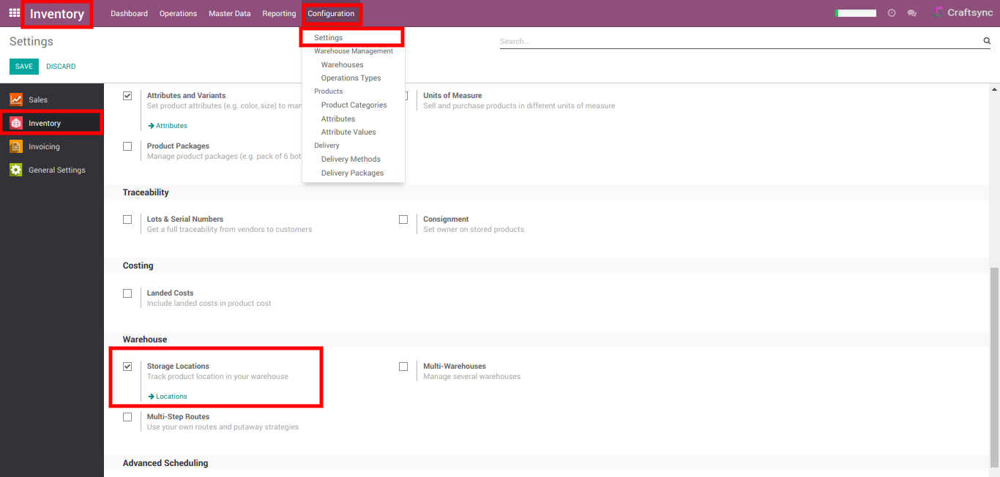
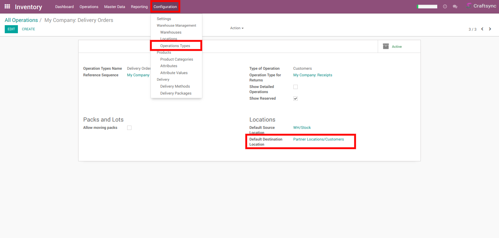
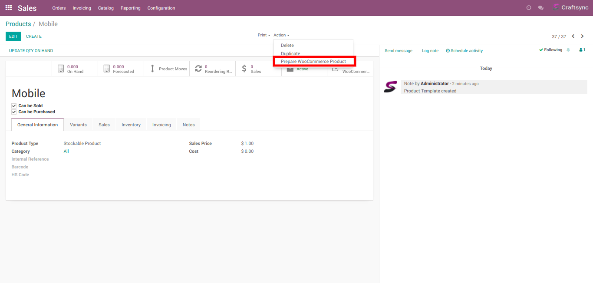

Features
- Manage Multiple WooCommerce Stores.
- Import/Sync/Export/Update Products
- Import/Sync Customers
- Import Product Inventory
- Import Orders, Update Order Status
- Cancel Order, Refund Order
- Update Price and Inventory Level
- Import Inventory from WooCommerce
- WooCommerce Sales Analysis Report
- Track each and every process details by Process Logs
- Automatically Import Order, Update Order Status
- Automatically Update Inventory Level
WooCommerce Dashboard
Using WooCommerce Dashboard you can perform various WooCommerce Actions.
Basic Setup & Configuration
Goto WooCommerce -> Instances -> WooCommerce Instances
Create new Instance and fill required Information like store
name. consumer key, consumer secret, user name, password etc.
Then click on Connect Instance to connect WooCommerce store with
Odoo

After Connect to instance need to setup basic details for WooCommerce instance.
In Configuration tab need to fillup below details.
- Attribute Type: Set as per WooCommerce configuration
- Auto Create Product?: Weather want to automatically create product if not available in Odoo
- Language: This will be set in WooCommerce Customers
- Warehouse: Select warehouse from where you want to manage WooCommerce Inventory
In Order tab need to fillup below details.
- Import Order Status: Select which WooCommerce order status Orders want to import in Odoo
- Import Order After: Select date and time after that time order will be import
- Sales Team: Select Sales Team for WooCommerce Orders
- Payment Term: Select Payment term which will set in WooCommerce Customer
- Discount Product: Select Discount Product for WooCommerce orders
- Fees Product: Select Fees Product for WooCommerce orders
- Shipping Policy: Select Shipping Policy for WooCommerce orders
- Invoicing Policy: Select Invoicing Policy for WooCommerce orders
- Pricelist: Select Pricelist WooCommerce orders as well as WooCommerce Products also
In Accounting tab need to fillup below details.
- Payment Journal: Select payment journal which will set when register invoice payment if not set in Payment Gateway

In Automatic Process tab need to fill up details for automatic process for Import Order, Update Order Status and Update Product Stock.
After Setup all things click on Confirm Instance to take it in use.
Once basic instance setup is done. you should setup auto process
for Orders.
Goto Sales -> Order Status -> Select Sale
Order status and set operation you want to perform when order is
being import

Goto Payment -> Payment Gateways
Here in WooCommerce
Payment Gateway you can set Payment journal which will use when
payment for order is being register and have same payment
gateway in Order.
Import Orders / Update Order Status
Import Order
Update Order Status
Goto WooCommerce Dashboard -> Delivery Panel -> Action -> Update
Order Status for Update Order Status of orders which process has
been done in Odoo.
For Update Order
Status once you need to setup Default Destination Location
Goto Inventory -> Configuration -> Settings and check
Storage Locations 
After that Goto Inventory -> Configuration -> Operations Types.
Select Delivery Order Operation type and set
Default Destination Location as Partner Locations/Customers 
Cancel Order/Refund Order
If you want to cancel any order in WooCommerce you can navigate
to that order and click on cancel, that order will be cancelled
and one button
Cancel In WooCommerce will be
visible you can click on it to cancel order in WooCommerce
If you want to refund any order in WooCommerce you can navigate
to that order's invoice, create credit note and after validate
it one button
Refund In WooCommerce will be
visible you can click on it to refund about order in WooCommerce
Import/Sync/Export/Update Products
Goto WooCommerce Dashboard -> Woo Instance -> Sync Products for Import/Sync from WooCommerce
to Odoo.
Import/Sync Products will import products from
WooCommerce to Odoo and mapped it with Odoo products. When
products are importing if Auto create product? is checked in
instance setting then it will create new products if not found
with same SKU otherwise it will mapped with existing one and
sync its details.
Once products were imported in Odoo
and afterward any changes made in WooCommerce then you can also
sync selected products by select products in popup
For Export Products from Odoo to WooCommerce first need to Prepare WooCommerce Product
For that Goto Sales -> Catalog -> Products -> Select Products in List view or open form view of product -> click on Action -> Prepare WooCommerce Product then select instance for that want to prepare product and click on Prepare product.
It will create WooCommerce products. from WooCommerce -> Catalog -> Products you will find that products. There you can enter various details for products like description, short description etc. and also can set gallery images
Goto WooCommerce Dashboard -> Woo Instance -> Export/Update Products
From there
you can export
products, update products, update price, update image, update
stock.
If you want to update specific products then you
can select it otherwise it will perform operation on all
products.
Import Product Stock
Goto WooCommerce Dashboard -> Woo Instance -> Import
Products's Stock and select products if you want to import only
selected products' stock and click on import stock.
It will create Inventory Adjustment for imported products'
stock.
Goto WooCommerce -> Catalog -> Inventory
Adjustment here you can found inventory adjustment for
WooCommerce products in open state. you need to validate it in
order to make effect of stock in Odoo. 
Import WooCommerce Customers
Goto WooCommerce Dashboard -> Woo Instance -> Import Customer for import WooCommerce customer into Odoo.
Import/Sync/Export/Update Coupons
Goto WooCommerce Dashboard -> Woo Instance -> Import/Sync Coupons for import or sync WooCommerce Coupons into Odoo.
Goto WooCommerce Dashboard -> Woo Instance -> Export/Update Coupons for export or update WooCommerce Coupons.
Import/Sync/Export/Update Category
Goto WooCommerce Dashboard -> Woo Instance -> Import/Sync Category for import or sync WooCommerce Category into Odoo.
Goto WooCommerce Dashboard -> Woo Instance -> Export/Update Category for export or update WooCommerce Category. If you had selected any categories it will perform operation on that only otherwise will perform on all categories
Import/Sync/Export/Update Tags
Goto WooCommerce Dashboard -> Woo Instance -> Import/Sync Tags for import or sync WooCommerce Tags into Odoo.
Goto WooCommerce Dashboard -> Woo Instance -> Export/Update Tags for export or update WooCommerce Tags. If you had selected any categories it will perform operation on that only otherwise will perform on all categories